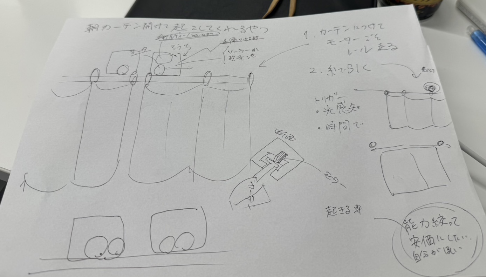
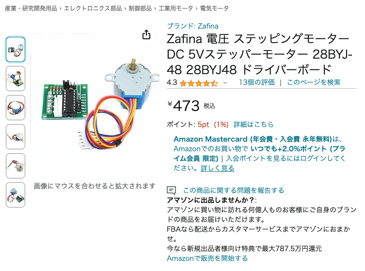
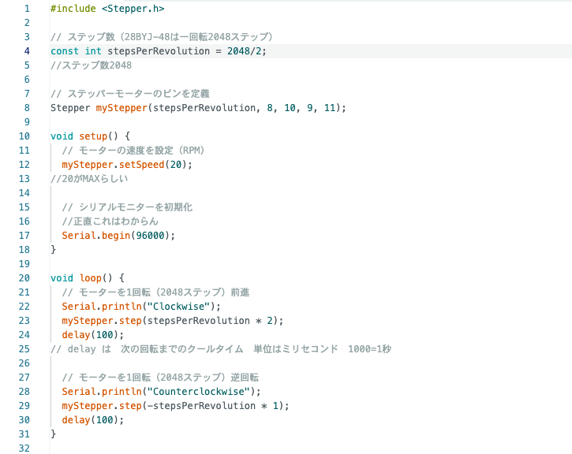
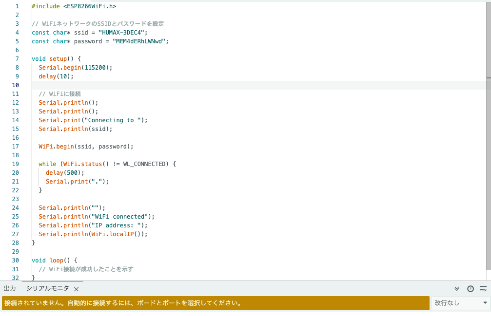

作品紹介動画（音量注意）
今回はArduinoとLEDを使ったシンプルなルーレットのゲームを作りました！
見れない方は
こちら
から!
URLリンク： https://www.youtube.com/watch?v=c8CCxS4D13s
想定してるストーリー動画
見れない方は
こちら
から!
URLリンク： https://www.youtube.com/watch?v=J2KrhAWprqk
シンプルな完成品動画
見れない方は
こちら
から!
URLリンク： https://youtube.com/shorts/6ymzHCkK1RA?si=cVBB5Xwymp6YdlqA
■ ⇒考えること、疑問など
● ⇒具体的なやること
▶ ⇒やったこと

■朝自然に起きれるように、カーテンを自動開閉する装置を作ろう。何が必要だろうか。
カーテンを動かすモーターが必要だ。
●ステッピングモーターを買おう。
▶ステッピングモーター(28BYJ-48)を購入。

ここで緑の基盤のような部分に何のPINを挿せばいいか迷い、停滞。
未完成の危機を感じ、同時に次の作品も開始。
(その後オスオスではないオスメスのジャンパーワイヤーを発見、
購入しモーターが動くようになった。)
その時のコード⬇︎

ーーここまでで2週間ほど経ったーー

■それはマイクセンサーとディスプレイを使って音を表示し、
それに一番近い音を手をたたく音で出した人が勝ちというゲームを
考えています。このゲームはいろんな遊び方があるのですが
まずはこの遊び方を作っていこうと考えています。
●
サウンドセンサー
ディスプレイ
を購入。
▶実際にセンサーをArduinoUNOに繋げた。
しかしセンサーの感度調整に難航。
近くで大声を出しても値に変化が起きず、
トライアンドエラーを3,40回繰り返し、
他の人やSAのあみくらさんの協力を得ても
それでもセンサーの仕様がわからず断念。
■Google calender APIを利用してGoogle calenderの曜日や予定によって
aruduinoと接続したLEDライトが光るというものを作ろう。
●wifiモジュールESP3266、または上位機種ESP32をArduinoに繋ぐ。
▶一応反応は見えたが、1.Arduino IDEのコードでサーバーを作る。
2.サーバーがwifiモジュールに信号送信、3.モジュールが受信、
4.それをジャンパーワイヤーを介し、回路全体に信号を送る。
5.その結果をPCのシリアルポートに送信
のような反応を起こせず。断念。
その時のIDEのコード⬇︎

ついに原点回帰にして起死回生のLチカ応用作品爆誕
■メンバーの一人がパチスロの目押しが上手くなりたいとのことで
aruduinoでLチカを七つ作ってそれを3つ
用意することでスロットの目押しようなあそびができるものをつくる。
●以下のものを用意した。
LED7*3、
ブレッドボード*3
100~1000Ωの抵抗器*3
スイッチ
ジャンパーワイヤー 紐状のものとホッチキス状のもの50個前後
フィールドワークや
Arduinoのコードや実物回路調整などの
▶試行錯誤あって
なんとか7つのLEDがチカチカしてそれをスイッチで止めるような装置が完成。
フィールドワーク
エジソンプラザことタック電子へ
石川町駅を降りて数分のところでMapがここを示す

タック電子を確認するも中は閉まっている模様。隣にも電子部品を販売している店を発見。
様々な電子部品を見て回ったが、目当てのものはなかった。
タック電子販売（有）の所在地
（有）シンコー電機の所在地
Arduinoのコードと回路
コード
- //当Webサイトに掲載された内容によって生じた損害等の一切の責任を負いません。
- //当webサイトの免責事項に同意いただける場合に限り、プログラムをご利用いただけます。
- #define SW_PIN 13 //スイッチが接続されているピンを定義
- int RAN_NUM = 1; //ランダムな数を格納する変数
- int sw_state = 0; //スイッチの状態を記憶する変数
- void setup() {
-
- //入力ピンに設定
- pinMode( SW_PIN, INPUT_PULLUP );
-
- //出力ピンに設定
- pinMode( 4, OUTPUT );
- pinMode( 5, OUTPUT );
- pinMode( 6, OUTPUT );
- pinMode( 7, OUTPUT );
- pinMode( 8, OUTPUT );
- pinMode( 9, OUTPUT );
- pinMode( 10, OUTPUT );
- }
- void loop() {
- //SWが押されるまでランダムに出目を表示し続ける
- while(sw_state == 0){
- RAN_NUM = random(1,7); //ランダムに1〜6の出目を生成
- ledOff(); //LEDをすべて消灯
- ledOn(RAN_NUM); //出目に応じたLEDを点灯
- //SWが押されたら、状態を移行する（ループを抜ける）
- if(digitalRead(SW_PIN)==LOW){
- sw_state = 1; //状態を移行
- delay(200);
- }
- }
- //SWが押されるまで決まった出目を表示し続ける
- while(sw_state == 1){
- ledOn(RAN_NUM); //出目に応じたLEDを点灯
-
- //SWが押されたら、状態を移行する（ループを抜ける）
- if(digitalRead(SW_PIN)==LOW){
- sw_state = 0; //状態を移行
- delay(200);
- }
- }
- }
- //渡された出目に対応するledをONにする関数
- void ledOn(int led_ran_num){
- switch(led_ran_num){
- case 1:
- digitalWrite( 4, HIGH );
- break;
- case 2:
- digitalWrite( 5, HIGH );
- digitalWrite( 10, HIGH );
- break;
- case 3:
- digitalWrite( 4, HIGH );
- digitalWrite( 5, HIGH );
- digitalWrite( 10, HIGH );
- break;
- case 4:
- digitalWrite( 5, HIGH );
- digitalWrite( 7, HIGH );
- digitalWrite( 8, HIGH );
- digitalWrite( 10, HIGH );
- break;
- case 5:
- digitalWrite( 4, HIGH );
- digitalWrite( 5, HIGH );
- digitalWrite( 7, HIGH );
- digitalWrite( 8, HIGH );
- digitalWrite( 10, HIGH );
- break;
- case 6:
- digitalWrite( 5, HIGH );
- digitalWrite( 6, HIGH );
- digitalWrite( 7, HIGH );
- digitalWrite( 8, HIGH );
- digitalWrite( 9, HIGH );
- digitalWrite( 10, HIGH );
- break;
- }
- delay(10);
- }
- //ledをOFFにする関数
- void ledOff(){
- digitalWrite( 4, LOW );
- digitalWrite( 5, LOW );
- digitalWrite( 6, LOW );
- digitalWrite( 7, LOW );
- digitalWrite( 8, LOW );
- digitalWrite( 9, LOW );
- digitalWrite( 10, LOW );
- }
回路図

実物の回路
実際やってみると電気を通してないジャンパーワイヤーがあったり、
なぜか真ん中の境を越えると下で通じない謎仕様に遭遇しながらも一応完成！
ちなみに「オームの法則」から、抵抗は小さい方が電流が強くなって
ギラギラ光る上に抵抗器ケチれると考え、
試しに抵抗なしで「 n PIN（+）、LED、GND（−）」の順に回路を組んだところ、
抵抗器有りの時よりもLEDの光は鮮やかさ、綺麗さが減少した。
もしかしたら、フィラメント的なものが燃えていたりするのかもしれない。
また、「抵抗ぶっちゃけいらない？」と調べたところ、
抵抗器が電流の熱へのエネルギーロスを防ぎ、
うまいこと調整してるのだそう。
それとオームの法則、
電圧V（一定）＝電流I（変動）×抵抗Ω（抵抗器次第）
を、抵抗器を100Ω、1kΩ、5kΩ、10kΩなどを使って改めて実感した。
デザイン演習34最終課題発表.pptx